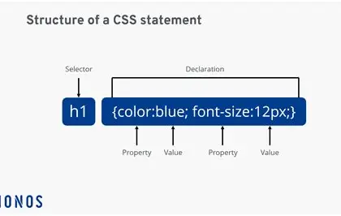
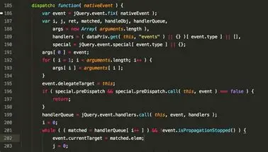
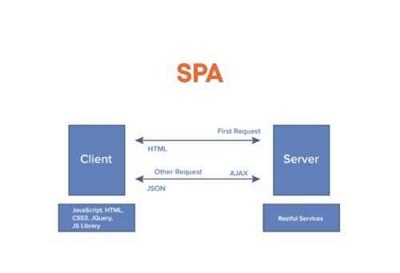
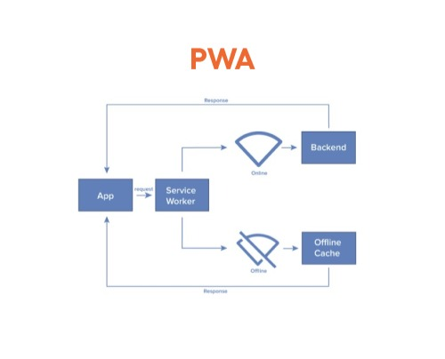
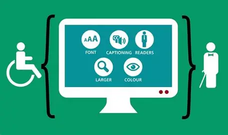

JavaScript: A scripting language that enables interactivity, dynamic content, and client-side logic.
Single-Page Application (SPA): A web app that loads a single HTML page and dynamically updates content without refreshing.
Progressive Web App (PWA): A hybrid between websites and mobile apps, offering offline access, push notifications, and installability.
Responsive Design: A design approach that ensures websites adapt to different screen sizes and devices.
Accessibility (WCAG): Guidelines that ensure websites are usable by people with disabilities, including screen reader compatibility and keyboard navigation.
HTML
HTML (HyperText Markup Language) is the backbone of every webpage. It defines the structure of content using semantic tags like <header>, <section>, and <footer>.
By organizing content into meaningful elements, HTML ensures that browsers and assistive technologies can interpret the page correctly.
Proper use of HTML improves accessibility, search engine optimization (SEO), and maintainability.
It also provides the foundation upon which CSS and JavaScript build styling and interactivity, making HTML the essential starting point for all web development.
CSS

CSS (Cascading Style Sheets) controls the visual presentation of web content. It allows developers to style elements with colors, fonts, spacing, and layout techniques like Flexbox and Grid.
CSS separates design from structure, enabling cleaner code and easier updates.
Media queries make websites responsive, ensuring they look great on desktops, tablets, and smartphones.
With CSS animations and transitions, developers can add subtle motion and polish, creating engaging user experiences while maintaining performance.
JavaScript

JavaScript adds interactivity and dynamic behavior to websites. It enables features like dropdown menus, modals, form validation, and real-time updates.
By manipulating the Document Object Model (DOM), JavaScript can change page content without reloading.
It also fetches data from APIs, powers single-page applications, and supports frameworks like React, Angular, and Vue.
As the most widely used programming language for the web, JavaScript is essential for building modern, interactive applications that respond instantly to user actions.
Single-Page Application (SPA)

A Single-Page Application (SPA) is a web app that loads a single HTML page and dynamically updates content without refreshing.
SPAs enhance user experience by reducing page load times and enabling seamless navigation.
They rely heavily on JavaScript to manage routing and data updates, often using frameworks like React, Angular, or Vue.
This approach makes applications feel faster and more fluid, resembling native apps while still running in the browser.
Progressive Web App (PWA)

A Progressive Web App (PWA) blends the best of web and mobile apps. PWAs offer offline access, push notifications, and installability, making them feel like native apps while still running in the browser.
They use service workers, manifest files, and responsive design to deliver fast, reliable, and engaging experiences across devices.
PWAs are lightweight, secure, and can be added to a home screen, bridging the gap between websites and mobile applications.
Accessibility

Accessibility ensures websites are usable by everyone, including people with disabilities.
Following WCAG guidelines means using alt text for images, proper heading structure, keyboard-friendly navigation, and ARIA roles to support screen readers.
Accessible design not only broadens your audience but also improves usability for all users.
It reflects a commitment to inclusivity and ensures digital spaces are open to everyone, regardless of ability.
Responsive Design
Responsive design allows websites to adapt to different screen sizes and devices.
Using flexible grids, scalable images, and media queries, developers can create layouts that maintain usability and aesthetics across desktops, tablets, and smartphones.
Responsive design ensures that users have a consistent experience no matter how they access a site, making it a cornerstone of modern web development.